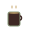
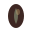
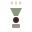
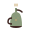

Logo Options for Make My Day Café

Make My Day Café.
Classic coffee cup with steam

Make My Day Café.
Stylized coffee bean

Make My Day Café.
Abstract coffee brewing

Make My Day Café.
Traditional Eritrean jebena (coffee pot)
Make My Day Café.
Elegant laurel wreath design ⭐ SELECTED
Preview how each logo looks with the café name. The Eritrean jebena is highlighted as requested!